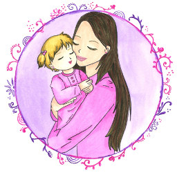

Полезные статьи
Значение отца в развитии личности ребенка
 Дорогие читатели, в этой статье рассказывается о психологической роли отца в развитии личности ребёнка, о двух важных функциях отца (защита и признание), описываются типичные родительские ошибки, которые совершаются по принципу «хотели как лучше, а получилось как всегда», раскрывается эмоциональная подоплека многих непростых и даже трагичных человеческих судеб. Статья будет интересна всем, кто стремится развиваться как личность и как родитель, тем, кто заботится о собственном душевном благополучии и благополучии своих детей.
Дорогие читатели, в этой статье рассказывается о психологической роли отца в развитии личности ребёнка, о двух важных функциях отца (защита и признание), описываются типичные родительские ошибки, которые совершаются по принципу «хотели как лучше, а получилось как всегда», раскрывается эмоциональная подоплека многих непростых и даже трагичных человеческих судеб. Статья будет интересна всем, кто стремится развиваться как личность и как родитель, тем, кто заботится о собственном душевном благополучии и благополучии своих детей.
Об истоках заболеваний и возможности их излечить при помощи МКТ
Организм человека устроен природой как идеальная система. В идеале (в норме), на любую поломку, блок, напряжение он должен иметь (и имеет!) нечто вроде антивирусной программы, которая способна с этим опытом справиться, гармонично его преодолеть и вернуться к благополучному состоянию здоровья...
Медитация: Путешествие В Мир Изобилия
Дорогие читатели, я хочу поделиться с вами замечательной медитацией, активизирующей волшебные ресурсные состояния, помогающей расслабиться и вернуть своей душе радость и гармонию. Медитация взята из книги "Крайон. Великая книга. Послания любви и счастья" Тамары Шмидт.
Отрывок из книги Виктории Райдос «Культ предков. Сила нашей крови»
Дорогие читатели, предлагаю вашему вниманию отрывок из книги Виктории Райдос «Культ предков. Сила нашей крови». В нём есть полезная информация для тех, кто хочет знать больше о том, что такое родовая карма и о том, как Род влияет на жизнь человека.
Органическая речь
Слово –начало всех начал. Каковы наши слова и мысли- таковы и мы сами. В этой статье рассказывается о том, как слова отражают состояние организма и как влияют на него.
Почему возникают долги
Дорогие читатели, в этом тексте я кратко расскажу об энергетических причинах возникновения денежных долгов.
Как услышать свою Душу
Слышать свою душу, я думаю, можно сильнее, можно слабее, но это слышание вряд ли улучшается от чтения чужих умных книг и постижения мыслей глубокомысленных авторов. Малые дети не читали всех этих умных философий, но это не мешает им очень живо чувствовать то, чего они хотят, а чего- нет и не мешает свободно и самозабвенно мечтать. А желания и мечты- это как раз из области души.
Поэтому,...
Для чего вообще нужно это «копание в себе»?
Бывает так: человек проживёт жизнь обыкновенно, обыденно, особо «не копаясь», не задумываясь, не оглядываясь, и только в старости у него вдруг откроется понимание того, о чём вообще была вся его жизнь ...
Труд души
У Николая Заболоцкого есть такое стихотворение о душе, в нём есть строка «не позволяй душе лениться, душа обязана трудиться».
Это действительно так. В раскопках, например (речь идёт о раскопках по методу Тета Хилинг), душа очищается и учится – это и есть этот труд, о котором речь. Только в раскопках он лёгкий, и в нём нет ничего общего с вкалыванием на заводе в три смены. Но он именно такой, как надо, потому что в нём есть главное: осмысление, озарение, инсайт! От этого труда человек оттаивает, становится живым, в нём просыпается интерес к жизни, воскресают лучшие качества.
Я хочу подчеркнуть эту мысль о том, что труд не должен быть всегда тяжёл и неподъёмен. ..
Секрет Золушки
«Люби – остальное приложится».
Вряд ли Золушка слышала это высказывание Рамакришны, но в своих поступках она всегда руководствовалась любовью. Ее мать, умирая, дала девочке важное наставление: «Будь скромной и ласковой, и Господь тебе всегда поможет». Наверно, индийские мудрецы назвали бы сказочную героиню последовательницей бхакти-йоги – йоги любви.
Работа с негативными сценариями Рода
Дорогие читатели, по следам работы с негативными сценариями Рода я хочу поделиться знаниями, которые открылись в процессе этой работы. Я расскажу о показателях здоровья и «болезни» Рода, о том, как улучшить ток силы в Роду и улучшить собственную жизнь.
О желаниях
Желая жить в мире, уместно для начала научиться не вступать и не порождать конфликтные ситуации.
Желая здоровья для своих детей, уместно научиться заботиться о своем собственном здоровье.
Желая получить большое счастье в жизни, хорошо бы научиться чувствовать себя счастливым просто оттого, что прямо сейчас светит солнце/идет дождь/поет птица/я вижу красивое лицо/у меня есть ГЛАЗА, и они ВИДЯТ!
Ключевой момент
 Мне видится, что о трудностях, испытаниях и страданиях важно понимать следующее: событие, вокруг которого развиваются любые неприятные для нас состояния или чувства- это точка роста, оно сигналит о том, что у нас есть урок, который надо вынести, а неприятные обстоятельства показывают, что ранее мы пропустили (и возможно, даже не раз) возможность своевременно и гармонично разобраться с этим пунктом в нашем жизненном списке.
Выход: глубоко осознать, в чём мы ошибались и научиться думать и вести себя в этом вопросе иначе.
Мне видится, что о трудностях, испытаниях и страданиях важно понимать следующее: событие, вокруг которого развиваются любые неприятные для нас состояния или чувства- это точка роста, оно сигналит о том, что у нас есть урок, который надо вынести, а неприятные обстоятельства показывают, что ранее мы пропустили (и возможно, даже не раз) возможность своевременно и гармонично разобраться с этим пунктом в нашем жизненном списке.
Выход: глубоко осознать, в чём мы ошибались и научиться думать и вести себя в этом вопросе иначе.
Когда "ничего в жизни не меняется"
Каждый раз, когда люди мне жалуются на то, что их жизнь не меняется, что все так же плохо, как и было и улучшений не предвидится, я всегда хочу задать им один и тот же вопрос:
А что ты делаешь, чтобы что-то изменилось?
Если ты делаешь все то же самое, что делал вчера, неделю, месяц и год назад, то отсутствие перемен – это закономерный результат! Если не делать ничего нового, если даже не изменять качество своих обычных действий, то о каких изменениях может идти речь?
Как выжить ребенку в семье, где много запретов?
Сегодня мне бы хотелось коротко рассказать вам о том, к чему приводят запреты, налагаемые родителями на своих детей.
Начну с того, что городская среда, городские квартиры вообще не предполагают наличие детей Почему, спросите вы? А я отвечу: дело в том, что все эти джунгли созданы взрослыми для собственных нужд, просто посмотрите на город под другим углом, т.е. смените угол зрения на то, а что есть в этой среде для ребенка. И кроме незатейливый, а чаше всего просто убогих детских площадок, вы ничего не найдете. Хорошо, если рядом есть парк, пруд, речушка: хоть какие-то обрывки природы. В остальном же детям просто не отведено место в мире взрослых. Дети, конечно, и тут найдут чем себя развлечь, чем заполнить вакуум, но разумеется это совсем не тот веер, не та полнота, которая необходима для растущего ребенка.
Убеждения — это не повод для гордости
“Убежденность в чем-то — это вовсе не достижение. Я воспитывался с мыслью, что убеждения — это что-то, чем действительно можно гордиться. Но на самом деле убеждения – это просто мнения людей, которые они не желают пересмотреть. С убеждениями все просто. Чем сильнее ваши убеждения, чем менее вы открыты для роста и развития, потому что “сила убеждений” — это всего лишь интенсивность, с которой мы отказываемся задавать сами себе вопросы. Если вы гордитесь своими убеждениями, верите в то, что ваши убеждения — это часть вашего “я”, значит, они уже стали частью вашего эго...
О «единственно верном»
Недавно прочитала пост мамы, нашедшей для своего пока больного ребенка самый –самый чудесный метод лечения (восстановления). Восхищенная находкой, описывая ее бесспорные достоинства, она, однако, очень негативно высказывалась о других испробованных на своём опыте методах и о тех, кто их применяет, и объявляла себя приверженцем этого «навсегда единственно правильного» метода.
О фатальности
Мне часто приходится слышать от людей фразы вроде «Я верю в судьбу», «От судьбы не уйдешь», «Выше головы не прыгнешь». Говоря так, люди как будто расписываются в своей беспомощности, неспособности что-то поменять в своей жизни, оправдывают свое состояние пассивности. Человек- будто щепка в огромном океане судьбы, и его беспорядочно мотают волны из одного конца на другой, и нет в этом никакого смысла. Так зачем же барахтаться, ведь океан не переспоришь. Будем плыть себе, совершая как можно меньше движений, авось куда-то прибьет. А утону- значит, судьба такая. Фатализм, да. Понятно, что этой идеей пропитан наш менталитет, об этом непостижимом Роке мы читали в книжках, слышали, наверное, от близкого окружения ..и впитывали. Учились считать, что жизнь- беспощадная и предопределенная, что есть где-то по ту сторону бытия эти Силы, которые раз и навсегда отмерили каждому чашу счастья и долю страданий и пытаться здесь что-то менять практически бесполезно.
Вчера ушла из жизни мой первый Учитель
Вчера ушла из жизни мой первый Учитель, Людмила Зверкова. Столько всего этот Человек принес в мою Жизнь. Самое главное, что я поняла тогда – что все возможно! Все легко! Столько Чуда пришло в мою жизнь с этим обучением, само обучение было Чудом. Когда каждый день я понимала и чувствовала все больше и лучше. А если кто-то из нас, учеников, не чувствовал, потому что этому мешали страхи и неэффективные убеждения, то Людмила подходила, легко прикасалась и спрашивала: Видишь? А сейчас? И люди начинали видеть, отпускали свои ограничения… Это были несколько долгих дней, наполненных светом, любовью и радостью. Это было состояние, когда я увидела весь узор моей жизни, когда я увидела всю картинку в общем, а не каждый кусочек в отдельности.
Изменяя себя, меняем других
 Существует справедливое утверждение: изменить других невозможно, изменить можно только себя. Наверняка многих людей в мире этот постулат сподвиг на глобальный пересмотр собственного мировоззрения и стал толчком для развития здорового отношения к себе и другим людям.
Ведь это действительно трезвая мысль: считаешь, что люди делают что-то неправильно – сам делай так, как правильно и чувствуй, что поступаешь хорошо и меняешь свою жизнь к лучшему. А что до других- пусть живут так, как им позволяет их совесть, разум, душа, ведь это их жизнь, их выбор и путь.
Существует справедливое утверждение: изменить других невозможно, изменить можно только себя. Наверняка многих людей в мире этот постулат сподвиг на глобальный пересмотр собственного мировоззрения и стал толчком для развития здорового отношения к себе и другим людям.
Ведь это действительно трезвая мысль: считаешь, что люди делают что-то неправильно – сам делай так, как правильно и чувствуй, что поступаешь хорошо и меняешь свою жизнь к лучшему. А что до других- пусть живут так, как им позволяет их совесть, разум, душа, ведь это их жизнь, их выбор и путь.
Возможные причины аллергии и выход из нее
Сегодня я хочу рассказать об эмоциональных факторах, запускающих аллергию и/или отягощающих ее проявление и о том, на что стоит обратить внимание, если вы желаете от аллергии избавиться.
Сначала расскажу механизм появления аллергии. Аллергия бывает непосредственно связана с печенью и с ее функцией вывода токсинов. Появляется она, когда печень настолько нагружена, что не может в полной мере выполнять эту функцию, токсины начинают накапливаться в крови и тканях, и, чтобы как-то спастись от отравления, организм начинает выводить их через кожу – физически это проявляется в виде всевозможных кожных высыпаний и заболеваний (дерматит, экзема).
О чём говорят головные боли
Часто встречающаяся проблема у современных людей –это головная боль. Очень часто она бывает связана с напряжением, которое накопилось и от которого люди не смогли (не умеют) избавиться, сбросить. Первое, чем организм сигнализирует о его наличии- это появлением головной боли. Напряжение бывает разным – у кото-то оно вызвано застоем в желудочно-кишечном тракте, у кого-то это чисто психологическая проблема, из-за которой зажимаются кости черепа (и, как следствие, болит голова) или искривляется тело и тянет мышцы и т.д. – вариантов бывает много.
Глубинные причины нездоровья детей
Дорогие друзья, так получается, что ко мне обращаются люди с самыми разными проблемами, и, стараясь помочь им, я много ищу, читаю всевозможных авторов, черпаю в их текстах вдохновение и крупицы полезной для моей работы информации. Мне всегда радостно встречать у других людей разъяснение вопросов, которыми я озадачена или подтверждения моих собственных выводов, это дает мне понимание того, что я иду верным путем.
Образ здорового ребенка. Лечение маминой любовью.
 Каждая мама способна помочь ребенку справиться даже с тяжелой болезнью. Она может избавить своего сына или дочь от страхов, бессонницы, заикания и прочих нервных нарушений. Наконец, мама может дать ребенку установку на счастье (можно назвать это благословением на счастливую жизнь) – энергия этой установки создаст пространство, в котором он СМОЖЕТ развить свои способности, таланты, раскрыть свой потенциал, вырасти и стать счастливым человеком.
«Жизнь – это борьба!» или Национальная идея о необходимости трудностей и страданий
 История нашей страны насыщена драматичными событиями: восстания, революции, раскулачивание, репрессии, ссылки, голод, войны. Память о страданиях людей, живших в то время, жива до сих пор. И по сей день многие из нас, потомков, скорбят и оплакивают судьбы загубленных, погибших, разыскивают следы пропавших без вести… То и дело по телевидению мелькают передачи, показывающие и рассказывающие подробности тех страшных времен, фотографии, кинохроники, рассказы участников событий (если речь идет о Великой Отечественной войне, Русско- Японской, об Афганской, Чеченской…).
На протяжении многих лет патриотическое воспитание подрастающего поколения (в дет.садах, школах) базировалось главным образом на идее ценности памяти о Великой Отечественной Войне и подвиге народа, отдававшего всё на борьбу с врагом внешним и внутренним.
История нашей страны насыщена драматичными событиями: восстания, революции, раскулачивание, репрессии, ссылки, голод, войны. Память о страданиях людей, живших в то время, жива до сих пор. И по сей день многие из нас, потомков, скорбят и оплакивают судьбы загубленных, погибших, разыскивают следы пропавших без вести… То и дело по телевидению мелькают передачи, показывающие и рассказывающие подробности тех страшных времен, фотографии, кинохроники, рассказы участников событий (если речь идет о Великой Отечественной войне, Русско- Японской, об Афганской, Чеченской…).
На протяжении многих лет патриотическое воспитание подрастающего поколения (в дет.садах, школах) базировалось главным образом на идее ценности памяти о Великой Отечественной Войне и подвиге народа, отдававшего всё на борьбу с врагом внешним и внутренним.
Страхи
Всем знакомы присказки "все мы под богом ходим" и "на бога надейся, а сам не оплошай". Как это обычно бывает, истина лежит где-то посередине, на тонкой грани между бесконечным упованием на те силы, что выше и мудрее нас и действиями, которые мы способны делать самостоятельно, шагами, которые мы можем или должны совершить, чтобы продвинуться на пути.
Сегодня же я хочу поделиться с вами размышлениями о страхах, о том, какими они бывают и чем могут послужить нам.
Негармоничные уходы из жизни, и как они влияют на судьбы потомков
Самоубийства (а именно повешания) в семейной истории (в Роду), и почему важно о них знать и их прорабатывать.
Как показывает опыт и практика многих специалистов (не только работающих по методу тета хилинг, но и, например, работающих по методу расстановок) самоубийства любого из членов семьи (в любом поколении) не проходят бесследно для остальных участников Рода. Почему так происходит? Из всех систем, в которых мы вращаемся (рабочий коллектив, общественные организации, государство и т.д.) самое сильное, основополагающее влияние на нашу жизнь оказывает наша семья, Род. Эта тонкая энергетическая структура хранит память обо всех решениях, выборах, поступках каждого ее участника, эта информация аккумулируется, упаковывается и передается следующим поколениям (считается, что физически эта информация хранится в генах – это генетическая память). Таким образом и к сожалению непройденные уроки предков, их «пороки» и негармоничные поступки имеют возможность негативно влиять на жизнь, здоровье и благополучие потомков. К счастью,...
Хоопонопоно, путь освобождения от прошлого.
Хоопонопоно – это гавайская методика, помогающая оздоровить душу и тело, уравновесить энергетику и гармонию в нашей жизни. Она работает через принятие человеком собственных негативных эмоций и через прощение. Это своего рода психотерапия, которую каждый может проводить для себя сам.
Благодарность
 Счастью легче найти дорогу в тот дом, где умеют любить, радоваться и быть благодарными – в этих простых словах заложена истина. А как часто вы благодарите людей, жизнь, судьбу? За всё, что есть у вас в жизни, за всех, кто есть рядом с вами, за себя, свои таланты, достижения, за каждый малейший проблеск мысли или светлое утро – благодарите! В энергии благодарности заложена огромная сила исцеления, хорошо бы помнить об этом всегда. Пусть слово «благодарю» станет для вас первой помощью.
Счастью легче найти дорогу в тот дом, где умеют любить, радоваться и быть благодарными – в этих простых словах заложена истина. А как часто вы благодарите людей, жизнь, судьбу? За всё, что есть у вас в жизни, за всех, кто есть рядом с вами, за себя, свои таланты, достижения, за каждый малейший проблеск мысли или светлое утро – благодарите! В энергии благодарности заложена огромная сила исцеления, хорошо бы помнить об этом всегда. Пусть слово «благодарю» станет для вас первой помощью.